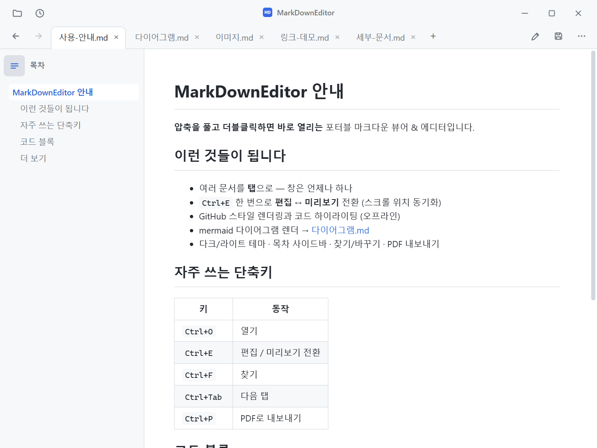
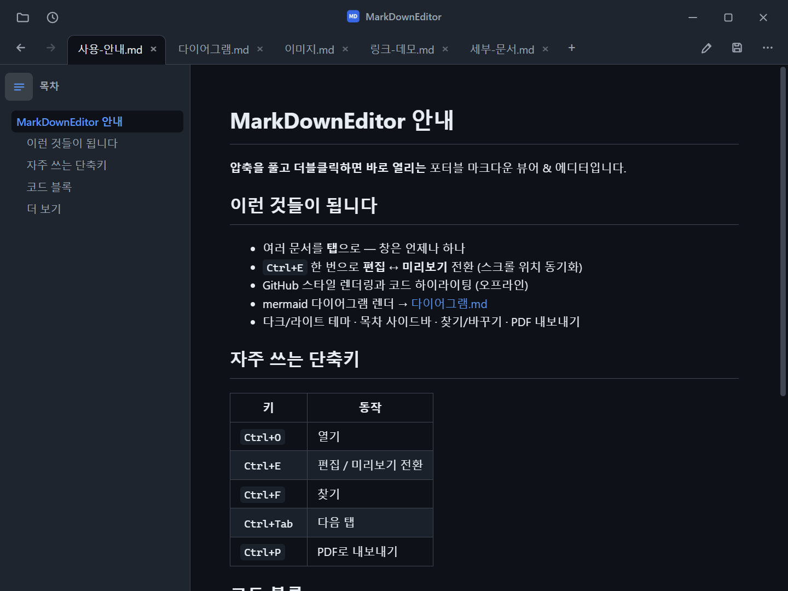
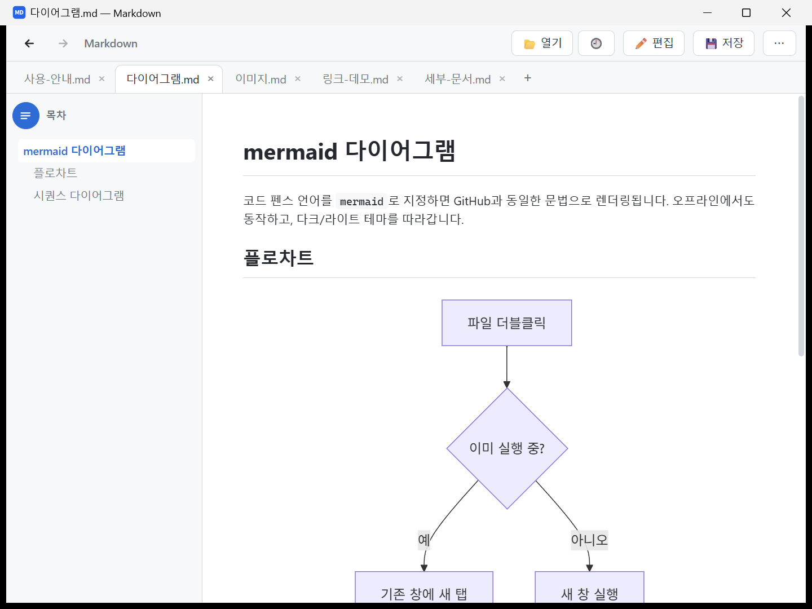
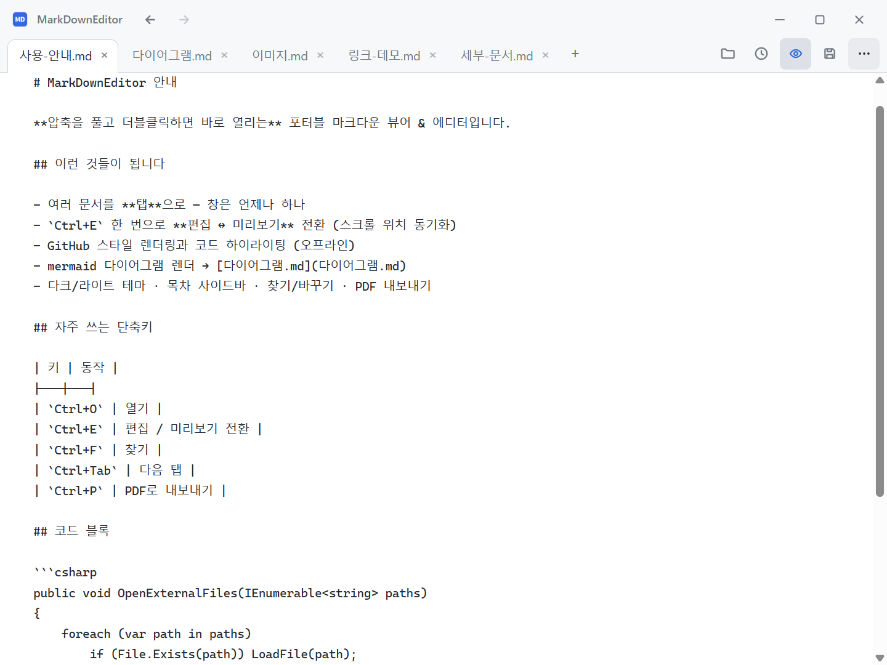
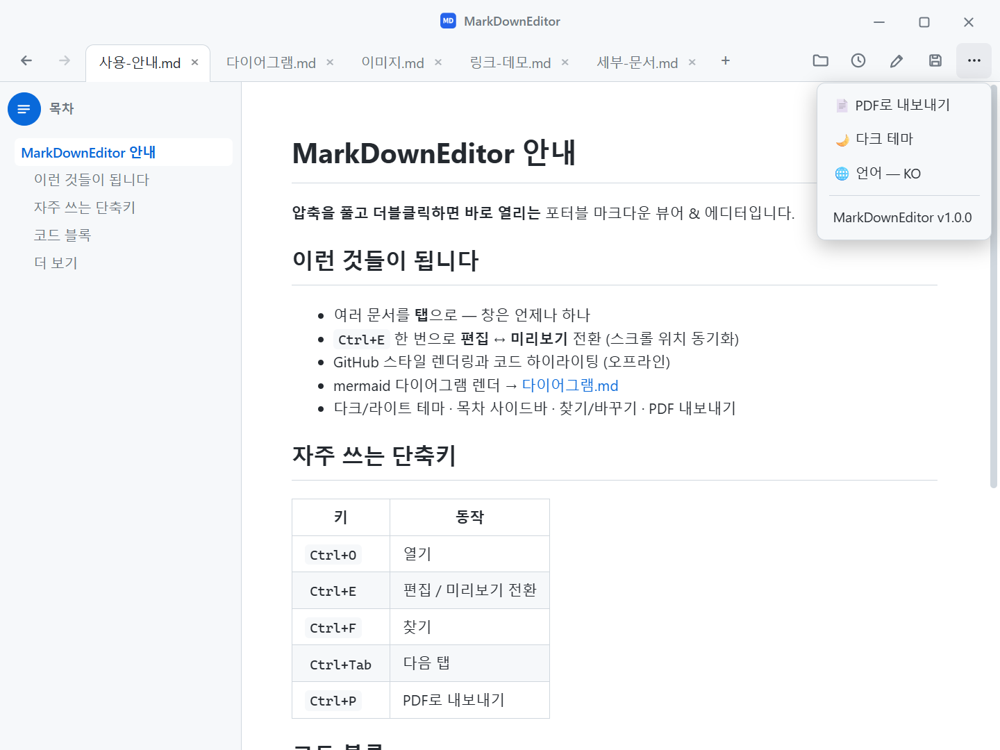

MarkDownEditor
가볍고 빠른 Windows용 마크다운 뷰어 & 에디터
.md 파일을 더블클릭하면 바로 열립니다. 설치가 필요 없는 포터블 앱.
.zip, 약 331 MB · Windows 10/11 (64-bit) · 압축 풀고 바로 실행 · 이번 버전에서 바뀐 점


가볍고 빠른 Windows용 마크다운 뷰어 & 에디터
.md 파일을 더블클릭하면 바로 열립니다. 설치가 필요 없는 포터블 앱.
.zip, 약 331 MB · Windows 10/11 (64-bit) · 압축 풀고 바로 실행 · 이번 버전에서 바뀐 점


윈도우에서 .md 파일 하나 보려면 대개 설치형 프로그램을 깔거나, 브라우저 확장을 붙이거나,
VS Code 같은 코드 에디터를 띄워야 합니다. 이 앱은 그 셋 다 필요 없습니다.
마크다운 뷰어가 먼저이고, .md 기본 프로그램으로 지정해두면
README·명세서·메모 폴더를 탐색기에서 더블클릭하는 것만으로 렌더링된 문서를 볼 수 있습니다.
편집이 필요하면 Ctrl+E 한 번이면 됩니다.
%AppData%가 아니라 실행 파일 옆에만 남습니다.무료 마크다운 뷰어, 가벼운 Typora 대안, md 파일 여는 프로그램을 찾고 있었다면 바로 그 용도로 만든 앱입니다.
읽기에 최적화하고, 쓰기는 필요할 때 바로 꺼낼 수 있게 만들었습니다.
.md 기본 연결 프로그램으로 지정하면 탐색기에서 더블클릭하는 순간 열립니다. 드래그&드롭도 지원합니다.
파일을 스무 개 열어도 창이 스무 개 뜨지 않습니다. 모두 한 창의 탭으로 모이고, 드래그로 순서를 바꿀 수 있습니다.
GitHub·GitLab과 동일한 문법의 플로차트·시퀀스·간트를 오프라인으로 렌더링합니다. 테마에 맞춰 색도 바뀝니다.
Windows 제목표시줄까지 함께 전환되고, 한 번 고르면 다음 실행에도 기억합니다.
버튼 한 번(Ctrl+P)으로 미리보기 그대로 PDF 저장. 별도 프린터 설정이 필요 없습니다.
굵게·제목·목록·체크박스·표·링크를 버튼 한 번에. 마크다운 문법을 몰라도 문서를 씁니다.
.md는 새 탭, 웹 링크는 브라우저, 폴더는 탐색기로. 문서 간 앵커 이동과 뒤로/앞으로 탐색까지 지원합니다.
저장 안 한 변경을 30초마다 스냅샷해 두었다가, 비정상 종료 후 재실행하면 복구를 제안합니다.
한국어·English·日本語·简体中文·繁體中文·Español·Français·Deutsch·Русский·Português. 기본은 OS 언어를 따릅니다.
실제 동작 화면입니다.




설치 프로그램 없음, 관리자 권한 없음. 3단계, 1분이면 끝납니다.
MarkDownEditor-standalone.zip 내려받기
— 이 링크는 항상 최신 버전을 가리킵니다 (약 331 MB).C:\Tools\MarkDownEditor, 바탕화면,
USB 메모리 어디든 됩니다.MarkDownEditor.exe 실행..md 기본 프로그램으로 지정 — 탐색기에서 아무 .md 파일 우클릭 →
연결 프로그램 → 다른 앱 선택 → MarkDownEditor.exe 선택
(목록에 없으면 내 PC에서 앱 선택) → 항상 이 앱을 사용하여 .md 파일 열기 체크.
이후로는 더블클릭만으로 열립니다.%AppData%에도
“앱 및 기능” 목록에도 아무것도 남기지 않습니다.
문서는 이 PC를 벗어나지 않습니다.